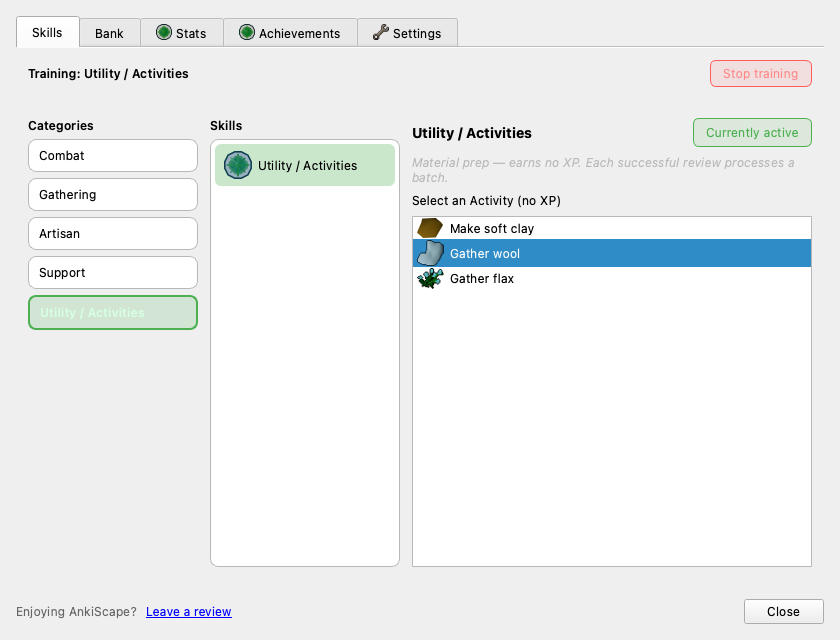
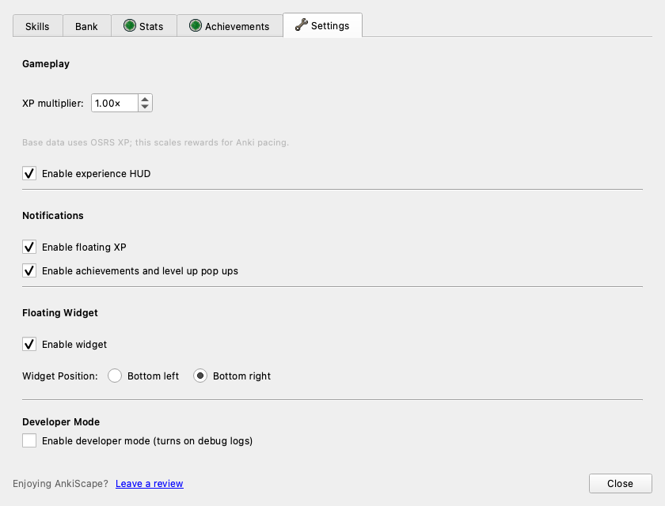

Utility prep gets a home. Crafting stays honest.
The Crafting/Utility rework's frontend half is in. The Skills hub now surfaces Utility / Activities as a no-XP material-prep bucket, the review HUD speaks its no-XP state, Crafting tooltips reveal batch/output, and Settings are regrouped with a tunable XP multiplier under Gameplay — all without making Utility a fake XP skill.


Hub Utility / Activities surfaced
A synthetic, visually-distinct category below the registry skills. Activity rows (make_soft_clay, gather_wool, gather_flax) carry tooltips that lead with "Processes up to 28 per successful card. No Crafting XP." Selection persists current_utility; "Start activity" / "Currently active" replace the XP-skill "Train" verbs.
Crafting Soft clay gone, batch shown
Soft clay is no longer a craft target (it moved to Utility in the backend). Craft tooltips now show Output: x{qty} and "up to N per successful card" for batched recipes (Ball of wool, Bow string) and multi-output ones (Silver bolts ×10).
HUD No-XP state, not "no skill"
When Utility is active, the review HUD shows the activity name and "material prep (no XP)" with the progress bar hidden — instead of falling back to the "No skill selected" placeholder it used to hit for unrecognized skills.
Settings Sections + XP multiplier
Regrouped into Gameplay (XP multiplier + experience HUD), Notifications (floating XP + popups), Floating Widget (enable + position), and Developer. The multiplier writes ankiscape_xp_multiplier, clamped through sanitize_xp_multiplier before persisting.
Design call: Utility is NOT a registry skill
Utility/Activities has no level or XP, so adding it to skill_registry would force fake *_level/*_exp keys and make is_review_skill lie. Instead it's injected at the ui view layer as a synthetic CategoryView/SkillCardView, routed through _UTILITY_SKILL_NAMES + current_utility (matching the backend's existing contract).
Wiring touched
ui.py · _build_utility_list ui.py · synthetic CategoryView ui.py · _render_panel (no-XP header) ui.py · ReviewHUD.set_data ui.py · settings sections + QDoubleSpinBox __init__.py · on_set_utility bridge tests/test_main_menu_widget.py · +4What's next
- Economy sources — decide how arrowtips/feathers enter play (dev-seed, Smithing, Utility, or shop/drop) before widening recipes.
- Utility iconography — activities reuse
crafteditems/material art and the hub row falls back to the achievement icon; a small dedicated set would sharpen the distinction. - Manual pass in Anki — verify a live review with Utility active increments inventory, awards no XP, and rolls back on Cmd-Z; confirm the multiplier scales a real XP skill.